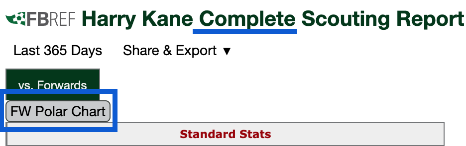
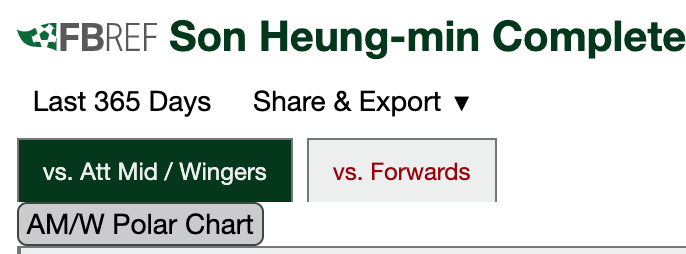

Navigate to fbref.com to use this extension
Go to a player's complete scouting report, and click the button to generate a polar chart

Players with multiple positions will have a different button depending which filter is set


created by mike @bobaluya